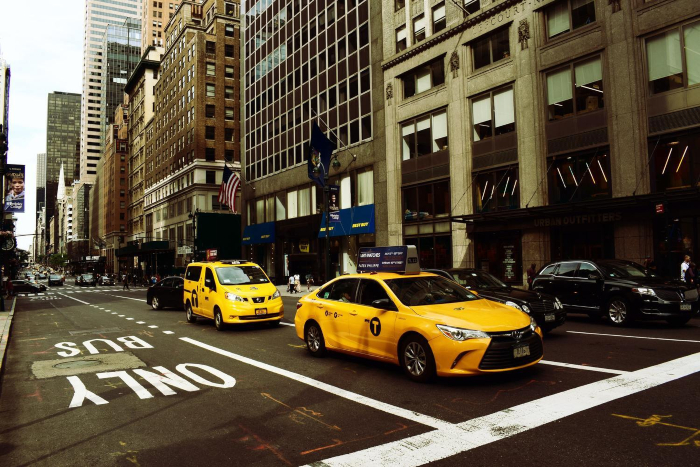

Estados Unidos: 5 cosas que tenes que saber antes de viajar a NYC
Nueva York es vibrante, gigante, caótica, fascinante, confusa, moderna, vanguardista, diversa, encantadora, apestosa, bella, entretenida y a veces, demasiado. Es mi ciudad favorita y para ser honesta la primera impresión de Nueva York puede llegar a ser abrumadora. Tampoco es un secreto que la gran manzana en general es una ciudad cara, así que aquí los errores viajeros son golpes a la cartera. Les hice una lista de los errores más comunes a cometer cuando se visita Nueva York por primera vez (o por segunda, tercera o más jaja)
- Los taxis del aeropuerto
- El subte
- Boletos con anticipación
- Broadway
- Souvenirs
Una de las mayores estafas para los visitantes de Nueva York son los falsos taxis en los aeropuertos. Si bien la forma más económica de llegar a tu destino es en metro, los taxis son una opción más rápida y, cuando se viaja en grupo, salen bastante a cuenta. La estafa consiste en lo siguiente: En cuanto sales de la terminal se te acercarán varias personas para ofrecerte un servicio de taxi ¡IGNÓRALAS! Si deseas tomar un taxi busca la linea de taxis oficiales en dónde debes formarte y abordarás un famoso taxi amarillo autorizado.
El metro de Nueva York es un sistema bastante complejo que toma tiempo entender. Cada línea identificada con un color tiene distintos tipos de trenes identificados por una letra. Cada letra tiene una ruta diferente. Hay trenes locales que se detienen en todas las estaciones y existen los trenes express que se detienen solo en las estaciones más importantes. Mi consejo es usar una aplicación como Google Maps o City Mapper que te dice exactamente qué tren tomar y dónde bajarte. Si la tecnología falla, tómate tu tiempo para estudiar el mapa y el sentido de los trenes. Es mejor perder unos minutos en la estación que equivocarte de tren.
Nueva York es una de las ciudades más visitadas del planeta, así como sus museos y atracciones principales. En temporadas altas las filas pueden ser insoportables. Por esta razón yo aconsejo mucho comprar los boletos por internet de forma anticipada para prácticamente todas las atracciones principales como el MoMa, Top of The Rock, One World Observatory, Estatua de la Libertad entre otras.
Ir al teatro en Broadway es parte esencial de una visita a Nueva York, es la meca del teatro y donde muchos de los más grandes musicales han nacido. La cartelera es muy amplia y cambia todo el tiempo. Si son entusiastas del teatro y quieren ver alguna obra en específico con buenos lugares, lo mejor siempre es la compra anticipada por internet.
Hay muchísimas tiendas de Souvenirs, principalmente en los alrededores de Times Square. También verán muchos puestos en la calle con las típicas camisetas de I Love NY. Comparen antes de comprar. La realidad es que la calidad entre los souvenirs oficiales (sí, la marca I Love NY está registrada y solo las tiendas con recuerdos oficiales las venden) son de mayor calidad que las que venden en los puestos de la calle (que son piratas) y que no siempre son más baratas. Aunque mi recomendación es comprar todo en el barrio chino.